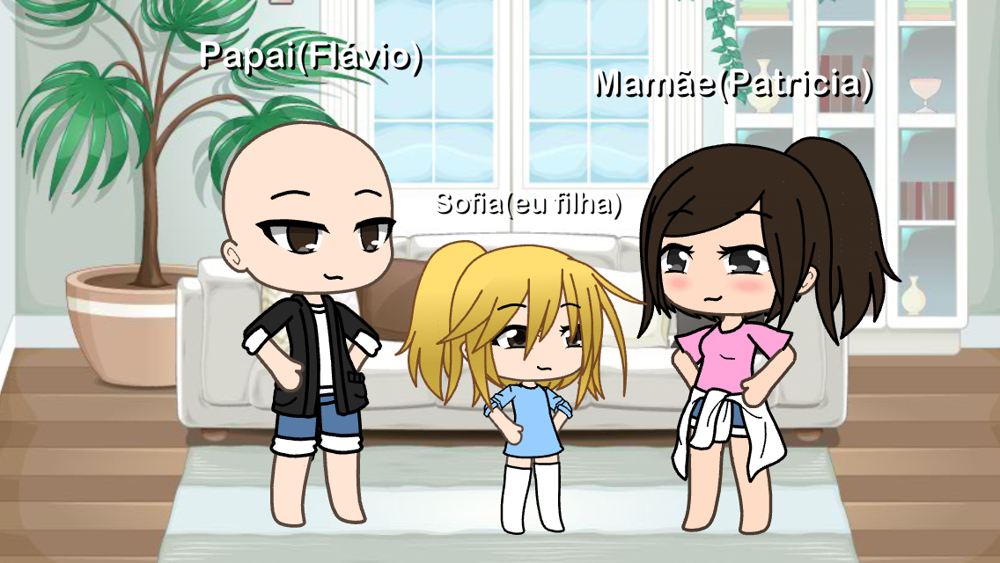

Imagens


Eu me chamo Sofia, tenho 11 anos e adoro jogar games onlines!
Um dia Alice e suas amigas estavam conversando sobre filmes clássicos, até que uma delas inventa o seguinte título, "Alice no país do 5º”, as três caíram na gargalhada, de repente a garota sumiu, e as outras foram falar para a prof. Quando acordou percebeu que estava no filme “Alice no país das maravilhas”, ela resolveu dar uma volta, e acabou caindo num buraco que a levou para um lugar desconhecido… A menina olhou a sua volta e percebeu que todas as personagens do filme eram na verdade seus amigos, Alice se assustou e acabou saindo correndo, e foi parar no castelo da rainha de copas, que era a sua professora, pois ela não gostava daquela mulher… Ela correu daquele lugar o mais rápido possível, mas acabou tropeçando e caiu de cara no chão…Quando a garota acordou viu seus amigos e a professora preocupados com ela, e se deu conta que ela tinha desmaiado e havia sido apenas um sonho…